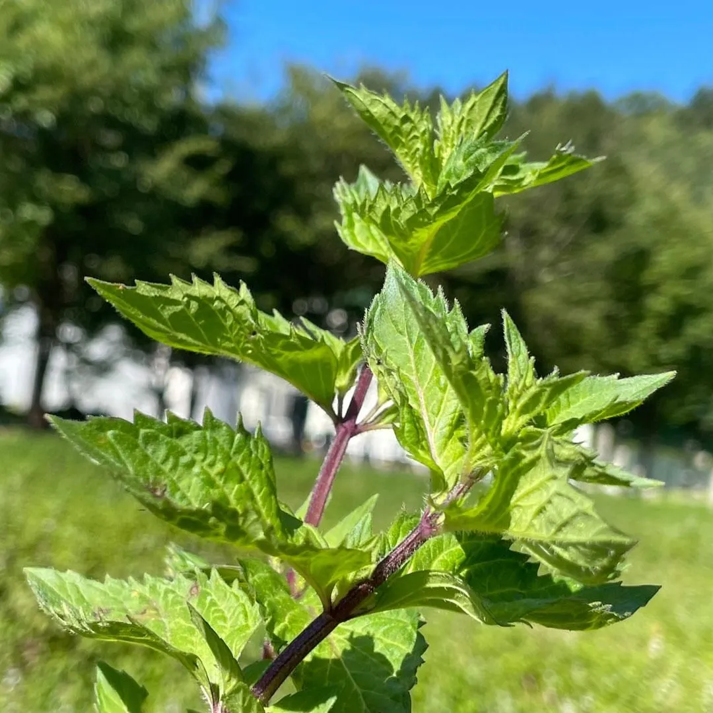
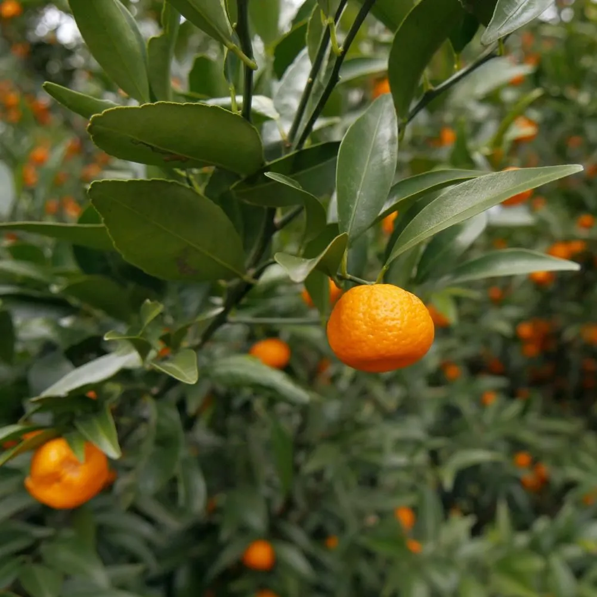
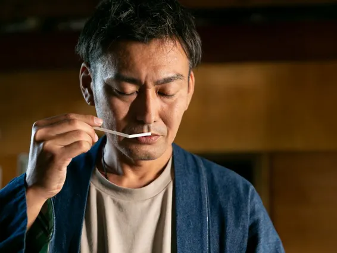

和薄荷
北海道 中川町
国産和薄荷
日本の素材、作り手、土地。すべてが一本に宿る。
2008年、KARA INNOVATEは東京で創業した。はじめは小さな調香の仕事だった。ホテルのロビー、セレクトショップの棚、誰かの大切な贈り物。様々な場で求められる香りを届けようとしていた。
そして気づいた。香りは、場所と人の間に静かに宿るものだと。
ヒノキの森、ゆずの産地、伽羅の薫り。それは単なる素材ではなく、土地と人と時間が作り出した物語だった。inimuは、その物語を多くの方に届けていくために生まれた。
WANOWAが使う香りの素材は、すべて産地と作り手が見えるものを選んでいる。
石川県能美市の国造ゆず、岐阜県中津川市の加子母ひのき、そして希少な国産の伽羅。
ひとつひとつの素材に、その土地の時間と気候が宿っている。

和薄荷
北海道 中川町
国産和薄荷

ゆず
石川県 能美市 国造地区
有機栽培30年以上の国造ゆず

ヒノキ
岐阜県 中津川市 加子母
国産ひのき葉精油

和束茶
京都府 和束町
宇治茶の産地で育った茶葉

土佐文旦
高知県
高知産の柑橘

大和橘
奈良県
日本固有の柑橘
伽羅（きゃら）
香木の王。深みとやわらかさを持つ、日本が誇る最高級素材。
ヒノキ
森の清潔感。雨上がりの山道を思わせる、日本人が最も親しむ香り。
ゆず
冬至の記憶。柑橘の明るさの中に、日本の暮らしの温もりがある。
19
年の実績
539
年間 WS 参加者
4.9
Google 評価（238件）
WANOWAが生まれたとき、その中心にひとつの問いがあった。香りを作ることで、誰かの未来に貢献できるだろうか。
私たちは香りの原料を育む森を守ることで、次の世代にも同じ香りを届けたいと思っている。売上の一部は、国内の植樹活動に寄付される。
あなたがWANOWAを手に取るとき、その選択はどこかの山の、一本の木につながっている。


清水 篤（しみず あつし）
株式会社 KARA INNOVATE 代表取締役
香りと出会ったのは、20代のころだった。ある調香師のアトリエで嗅いだ一本が、私の人生を変えた。香りは言葉を持たないのに、人の記憶や感情を瞬時に呼び起こす。その力に、深く魅了された。
2008年に会社を立ち上げ、ホテルやブランドに香りを届けながら、いつか自分たちのブランドをつくりたいと考えていた。浅草に店を開いたのは、日本の文化と観光が交差するこの街で、香りを通じて人と場所をつなぎたいと思ったから。
inimuは、まだ途中にある。これからも香りを通じて、人と人、人と場所をつなぐ仕事を続けていきたい。
この店で出会う香りが、誰かの人生の一部になれたなら。